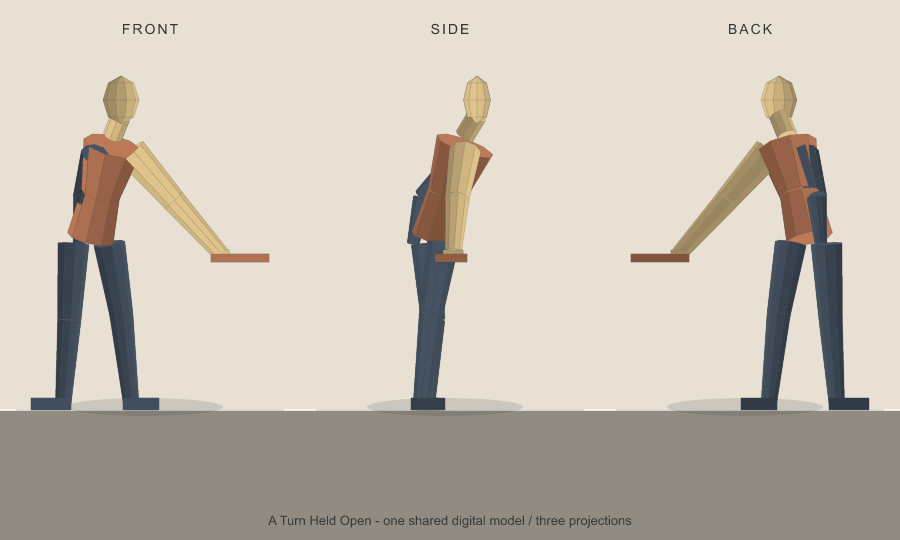

Groundnote · Digital drawing
A Turn Held Open
An invented figure braces one hand on a narrow edge and turns its shoulders against its hips. The same digital form appears from the front, side, and back.

The support keeps its contact through the turn, while the side view lets the legs return to view. This is a digital drawing of an imagined figure, not a physical sculpture or a scanned object.